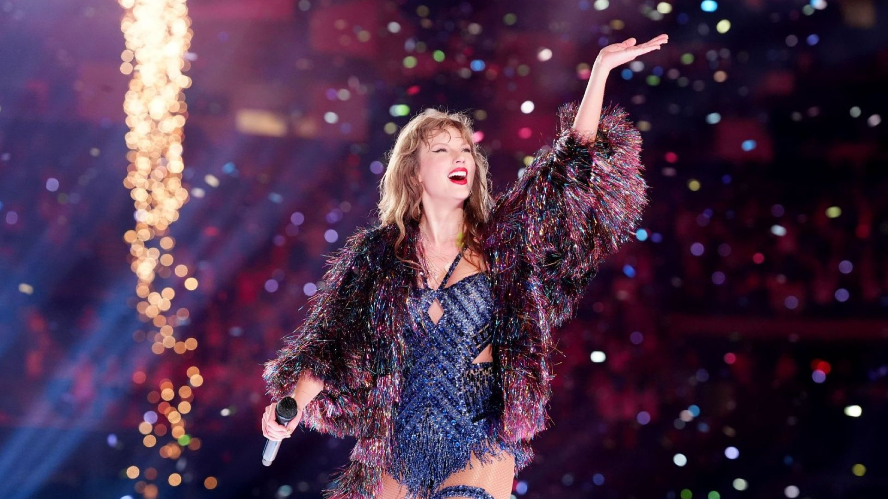

Taylor Alison Swift nasceu em 13 de dezembro de 1989, em West Reading, Pensilvânia, EUA. Cantora, compositora e produtora musical, é uma das artistas mais vendidas de todos os tempos, com mais de 200 milhões de discos vendidos mundialmente. Iniciou sua carreira ainda adolescente com o country, mas ao longo dos anos transitou pelo pop, rock e indie folk. Seus álbuns incluem clássicos como Fearless, 1989, Reputation e Midnights, consolidando-a como um fenômeno global da música.
Décimo álbum de estúdio, Midnights (2022), estreou com todos os dez primeiros lugares da Billboard Hot 100 simultaneamente, consolidando Taylor como um fenômeno sem precedentes na música.
Ver maisDetentora de 14 Grammy Awards, é a única artista a vencer o Grammy de Álbum do Ano quatro vezes: Fearless, 1989, Folklore e Midnights. Também acumula AMAs, VMAs e Billboard Awards.
Ver maisA The Eras Tour (2023–2024) se tornou a turnê mais lucrativa da história da música, arrecadando mais de 2 bilhões de dólares e percorrendo mais de 150 cidades no mundo inteiro.
Ver mais